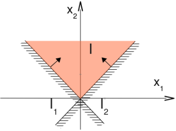

Last modified .

The aim is to minimise a vector of slack variables $w$ with the task vector belonging to an admissable space $x \in S_{i-1}$ which could for instance be a solution space of some other task, subject to the inequality constraint (i.e. satisfied as much as possible) with the slack variable. The slack variable is important because it may not be possible to fully comply with the inequality.
$$\begin{align*} S_i = \quad & arg \min_{x \in S_{i-1}} \quad \frac{1}{2} \, ||w||^2 \\ s.t. \quad & w \geq C_i \, x - d_i \end{align*}$$ This can be easily formulated within a QP solver.If the inequality constraint cannot be satisfied, the slack vector will have a norm larger than 0. Else, 0.
36:22